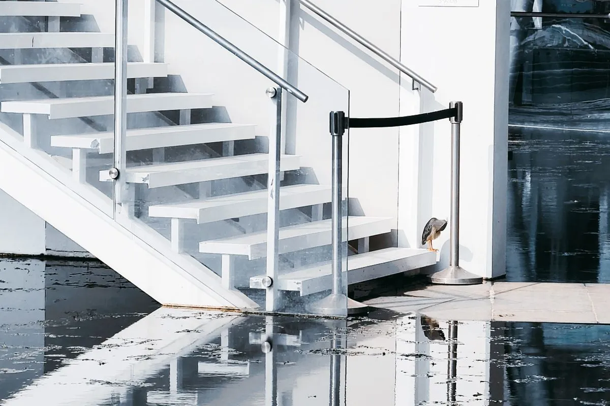

By Reno Rise. Published September 19, 2026. Last updated September 19, 2026. General planning information, not legal or engineering advice.

Basement waterproofing before renovation comes first because finishes hide moisture; they do not stop it. If your basement has any history of dampness, diagnose the cause and fix it before drywall, insulation or flooring goes up. Otherwise you are paying to bury a problem and inviting it to grow.
Your basement did not just start smelling weird. It has been filing complaints for months. Basements are dramatic like that, but they are also fixable.
Why does moisture come before the renovation?
A familiar scenario: a homeowner says the basement “just started” smelling musty last week. When a professional opens up one section of drywall, the moisture pattern tells a different story. It was slow, quiet and patient. Problems do not appear suddenly. Awareness does. Most renovation problems are not sudden. They are ignored.
What causes a wet basement?
- Downspouts and gutters that discharge next to the foundation.
- Soil that slopes toward the house.
- Cracks in walls or floors, or failed joints.
- Weeping tile that is blocked or failed.
- Window wells that fill with water.
- High groundwater after heavy rain or snowmelt.
How do you diagnose it?
Note where and when water appears: after rain, in spring, or all year, and whether it comes through walls, the floor-wall joint or a specific crack. The right fix depends on that answer. A downspout extension is a very different bill from excavation. Small fixes prevent big failures.
What are the main fixes?
Wet basement repair starts with the simple stuff. Interior waterproofing collects and redirects water that reaches the foundation. Exterior waterproofing addresses water at the wall and needs excavation. Targeted crack repair suits a localized leak. Toronto Building says installing a sump pump does not require a permit, but other work may.
If you live in Toronto and flooding is your worry, the City’s Basement Flooding Protection Subsidy Program covers part of the cost of items such as backwater valves and sump pumps for eligible owners (page updated June 2026; confirm current terms).
What should you do before finishing?
- Have a professional confirm the cause and the fix, and get the warranty in writing.
- Test the result through at least one heavy rainfall or thaw if you can.
- Use finishes and insulation suited to below-grade walls, and choose a floor the slab can support (see basement flooring considerations).
- Keep access to sump pumps, cleanouts and shut-offs.
When you are ready to plan the whole project, read basement renovation planning and the legal secondary suite guide. Fixed properly, your basement goes from mystery novel to fresh start.
General information, not legal or engineering advice. Confirm your project with Toronto Building and a qualified designer or contractor. Reno Rise does not issue permits or give code advice.
Frequently asked questions
Should I waterproof my basement before finishing it?
If there is any history of water or dampness, yes. Finishing over an unresolved moisture problem hides it and can lead to mould and a second renovation.
What causes a basement to leak after heavy rain?
Common causes include downspouts and grading that direct water toward the foundation, blocked weeping tile, wall cracks and window wells that fill with water.
Do I need a permit for a sump pump in Toronto?
Toronto Building says installing a sump pump does not require a building permit. Other water-control work may, so confirm your exact scope.
What is the difference between interior and exterior waterproofing?
Exterior waterproofing works from outside to keep water away from the wall and needs excavation. Interior waterproofing collects and redirects water that has reached the foundation.
Request a Basement Assessment
Share a few details about your basement and your plans. Reno Rise reviews what you send and, where there is a suitable fit, may connect you with an independent professional. This does not confirm an appointment, a quote, an approval or a match.